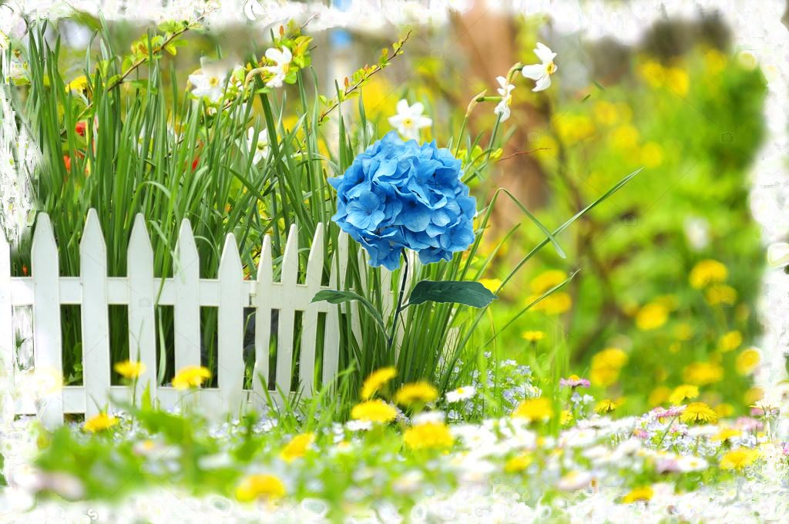

Казочка для Квіточки

Жила була на світі одна квіточка на ім'я Гортензія. Більшість її життя вона провела в дикому полі. Її
оточували як прості кульбаби, так і горді нарциси, а ще ромашки, троянди і хризантеми. Але навколо не
було жодної подібної їй гортензії.
Гортензія дуже любила тишу, але також обожнювала і вітер, який змушував траву навколо рухатись. Вітер
був диригентом для дерев, і після кожного його дотику вони співали пісні шелестом листя. Квіточка
обожнювала сонячні промені, але також їй подобалися хмаринки. Особливо, коли вони дарували їй краплі
дощу. Все їй подобалося навколо: бджілки і мурахи, черв'ячки і зайчики. Але якось раз біля квіточки
проповзав вуж:
- Гортензія, поговори зі мною, - сказав хитрий змій. А квіточка дуже здивувалася, адже ще ніколи ніхто з
нею не розмовляв. Вона навіть не здогадувалася про те, що вміє говорити.
- Привіт, - промовила вона своє перше в житті слово.
- Чому ти не розмовляєш з іншими квітами?
- Я навіть не знала, що можу.
- Можеш, - лукаво сказав вуж й поповз. А квіточка почала прислухатися до інших квітів і вперше почула в
шелесті слова. І в цей же момент відчула всередині смуток. Адже слова були образливими.
- Гортензія пахне жахливо, абсолютно не так, як я. - промовила троянда.
- А ще вона дуже висока, - підхопила кульбаба. - Псує всю красу нашої галявини.
- А мені от не подобаються її пелюстки. Маленькі і зібрані в одну купку – сказав нарцис.
. Почувши ці слова, Гортензія дуже засмутилася. Вона і не підозрювала, що виглядає так жахливо. З того
моменту її життя перетворилося на жах. Іноді вона бачила, як бджілка сідала на іншу квітку і розуміла,
це все через її каліцтва. Вона відштовхує комах своїм жахливим виглядом. А коли бджілки сідали на її
пелюстки, Гортензія вважала - це з жалості. І скоро бджілки покидали квіточку, що було дуже логічно для
неї. Хто ж зможе довго сидіти на такій високій і непривабливій рослині?
- Ох, краще б не чула цих слів. Краще б не зустрічала вужа. - говорила сама собі квіточка. І майже кожен
день її тягнуло послухати розмови квітів знову і знову, щоб засмутитися ще більше. Сама ж говорити
Гортензія боялася.
Якось раз до неї підлетів метелик і порадив все ж заговорити з сусідніми квітами, а не лише мовчки
підслуховувати:
- Заговори з ними і посміхнися ім. Це вмить розчине їх отруту. І вони розглянуть твою красу.
Так квіточка і зробила. Вона посміхнулася квітам і привіталася з ними. Побажала гарного дня. З тих пір
вона більше не чула поганих розмов про себе. Але все одно вважала себе дуже негарною.
Якось раз Гортензія прокинулася і за звичкою почала прислухатися до розмов квітів, а потім раптом
побачила жовте листя. Невже скоро осінь? І з тих пір інші квіти перипинили для неї існувати. Їх слова
знову були нерозбірливими і змішувалися з шелестом дерев. Гортензія милувалася красою природи і цінувала
кожну мить свого існування.
Але раптом Гортензія почула незвичайні слова:
- Яка гарна квітка, тату йди сюди! Як називається ця квітка?
- Це - гортензія, - сказав приємний голос. Через сонце їх не було видно. - У нас в саду цвітуть такі ж.
- А давай її пересадимо в наш сад. Вона ж така гарна, їй тут сумно одній серед галявини.
- Пересаджуй мій улюблений садівник), - промовив Батько. Незабаром Гортензія була вже в саду, а поруч з
нею цвіли такі ж як вона квіти. Красиві, яскраві, ароматні.
- Невже і я така ж гарна, як і ви? – промовила Гонтензія до квітів, що росли навколо.
- Так, люба, - посміхнулися їй садові гортензії.
Раптом на квіточку полилася вода.
- Як дивно. Адже хмаринок немає! - злякалася Гортензія.
- Так буває, коли тебе люблять і піклуються про тебе, - посміхнулися їй садові квіти. - Тоді тебе
поливають щодня просто для того, щоб ти цвіла і пахла.
І Гортензія посміхнулася. Як же було чудово, що вона потрапила в такий гарний сад і зрозуміла, як вона
виглядає. А ще більше її радувало те, що вона бачила інше життя в дикому полі. Це подарувало їй
можливість цінувати більше її нове життя в садку.